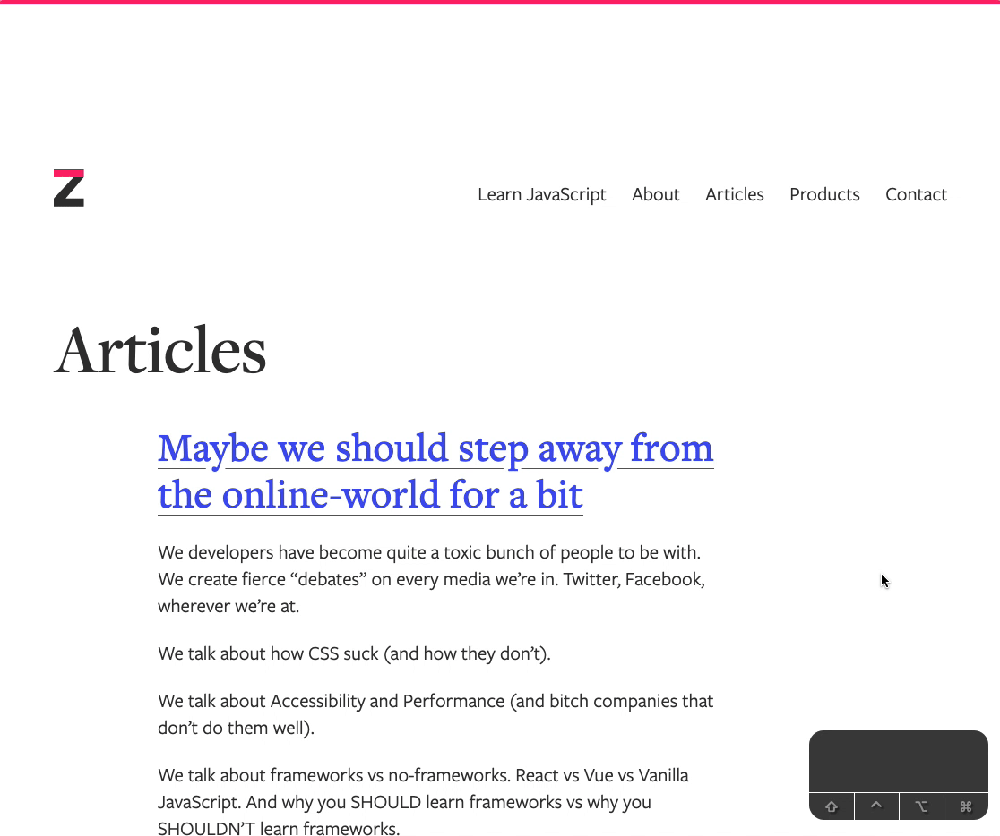
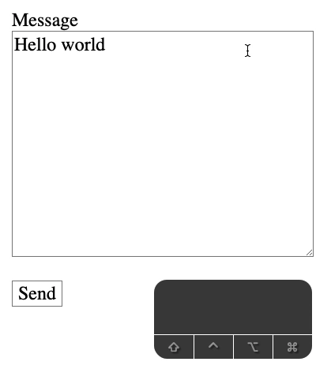

We’ll talk about the behavior of each key and the things you need to know about them.
Tab
Tab is the most important key on the web. It lets you cycle through elements you can focus on. These elements include:
Links
Buttons
Form elements
Note: For some weird reason, Safari doesn’t allow you to cycle through links and buttons by default. You need to enable it by going to Settings > Advanced. Under Accessibility, check “Press tab to highlight each item on a webpage”.
When you tab into an element, the element gets a focus state. The default style for focus is the blue glow around the element.
shift + tab lets you move to the previous focusable element.
Tab cycles focus through a link, a button and an input field.
You can change the focus style with :focus.
*:focus {
outline: 2px solid green;
}
Arrow keys
You can use arrow keys to browse a website:
Down arrow key (↓) nudges the scrollbar downwards
Up arrow key (↑) nudges the scrollbar upwards
option + ↓ scrolls down a page on a Mac. The PageDn key does the same thing on Windows.
option + ↑ scrolls up a page on a Mac. The PageUp key does the same thing on Windows.
command + ↓ scrolls to the end of the website on Mac. The End key does the same thing on Windows.
command + ↑ scrolls to the top of the website on Mac. The Home key does the same thing on Windows.
If the website has a horizontal scrollbar, you can also use left (← ) and right (→) keys to nudge the scrollbar in their respective directions.
When you’re interacting with form elements, arrow keys lets you:
choose a radio option
choose an option in a select element
Selecting radio optionChoose options in a select element
Space
Space can be used to interact with elements. It can be used to select a checkbox.
It can be used to open a <select> menu. It can also be used to choose an option from the menu.
If you have focus on a button element, pressing space on the button activates the button. This triggers the click event.
Finally, space can be used to scroll down the website by one page. shift + spacebar can be used to scroll up one page.
Note: the space key didn't show in the keystroke recorder when I pressed shift + space.
Enter
Enter can interact with some elements, but it is usually used to confirm or submit things.
First, if you’re on a button, you can use Enter to activate the button. This triggers a click event as well.
Second, if you’re on a link, Enter can be used to navigate to the href of the link.
Third, Enter can also be used to submit a form. This works only if:
Your focus is INSIDE a form
Your form has a submit button
Focus is not in <textarea>
Focus is not in an opened <select> menu
const form = document.querySelector('form')
form.addEventListener('submit', evt => {
evt.preventDefault() // Prevents default behavior so we can console log
console.log('Submit event triggered!')
})
If the focus is on a <textarea>, enter creates a new line in the <textarea>. It does not submit the form.
If you are in a select element, you can use enter to confirm an option. (You cannot use enter to open the select menu).
Escape
The escape key is used to quit a feature. For example, if you start a search with command + f (ctrl + f on PC), you can quit the search with Escape.
Backspace
Backspace is used for deleting things. You can use it to delete text in a form element like <input type="text"> and <textarea>.

In Firefox, backspace also triggers the browser’s back button. shift + backspace triggers the forward button.
Note: The backspace key did not show up in the keystroke recorder when I pressed shift + backspace
The “back button” behavior was a norm among browsers in the past. This functionality has been removed from Webkit-based browsers. If you want to navigate backwards or forwards, you can use the following: